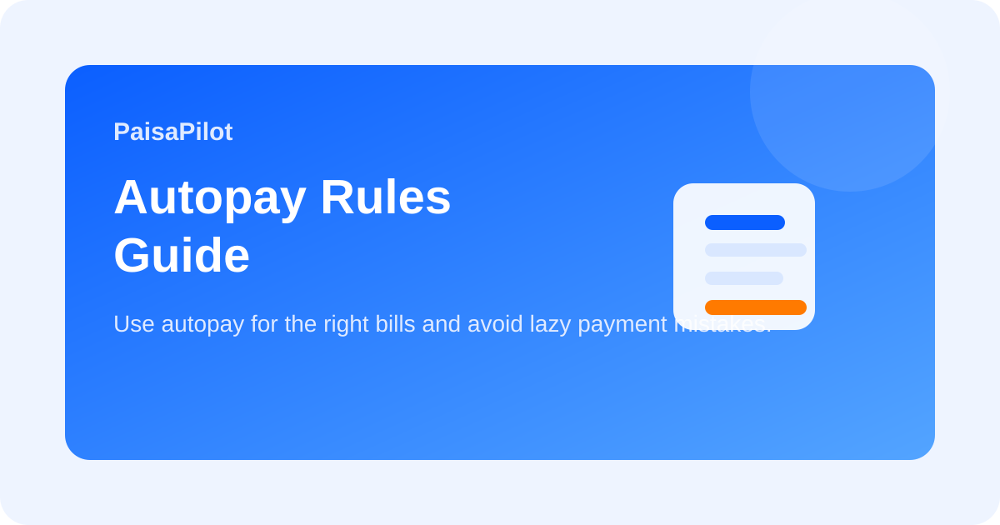

Autopay Rules: When to Use It and When to Keep Manual Control
Last updated: March 30, 2026

Autopay can make money management easier, but only when it is used with rules. Many people turn on autopay for everything and later discover failed debits, forgotten renewals, or unnecessary subscriptions. A better system is to use autopay only where it reduces real risk.
Quick Answer
Use autopay for essential, predictable payments that you definitely want to continue. Keep manual control for variable bills, non-essential subscriptions, and anything you want to review before payment. The best autopay setup is selective, not automatic everywhere.
Where Autopay Makes Sense
- loan EMI
- health or life insurance premium
- important utility bills when amount is stable
- essential SIP or disciplined investing amount
Where Manual Control Is Better
- trial subscriptions
- entertainment platforms you may cancel
- variable card bills you prefer to review
- online services used only occasionally
Autopay Risk Checklist
| Question | Why it matters |
|---|---|
| Is this payment essential? | Essential payments deserve automation more than convenience spending. |
| Is the amount predictable? | Variable debits are easier to misuse or forget. |
| Would I still pay this if reminded today? | Helps prevent lazy renewals. |
| Do I have a buffer in the linked account? | Avoids failed debit penalties and stress. |
Best Working System
- Keep one account only for major scheduled debits.
- Maintain a small buffer for autopay safety.
- Review all autopay mandates once a month.
- Remove autopay from low-value subscriptions immediately.
Common Mistakes
- Enabling autopay during checkout without thinking.
- Linking autopay to the same account used for all spending.
- Forgetting to cancel autopay after stopping a service.
- Assuming autopay means no need to review statements.
Related Guides
Subscription Audit Checklist, Bank Statement Review, Loan EMI Planning
Editorial Note: Educational information only; app and bank autopay settings can differ, so review your actual mandate settings.